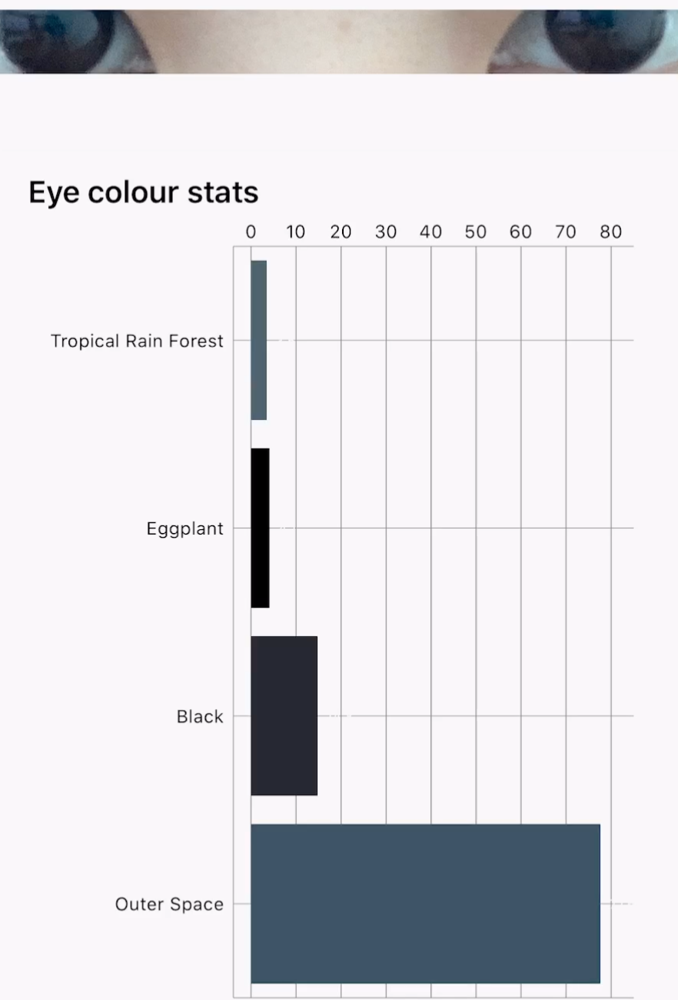

Context
- Raise awareness about vision care
- The use of poetry that is being generated by AI (base on user’s eye color)
- Doesn’t make absolute sense, in contrary to a precision diagnosis/prescription
- Allow user to read, think and try to interpret the poem on their own
Form & Uniqueness
Experience, One of a Kind & Poetic Language
This will be an interactive installation and creates a unique, non-invasive experience that mimics part
of the process of an eye exam. Each poem will be tailored to each individual.
Who & Where
Libraries & Book storesThese locations would probably generate the most interest for my project
- Uses their eyes
- Not in a rushed location, people tend to stay for a longer period of time
- Interest in literature (hopefully poetry)
Process Breakdown
- Look into the modified phoropter
- Camera scans user's eyes and collects data
- Using OpenCV (face detection, eye detection, pupil detection, iris detection, eye color detection, color quantization)
- Collect the keywords of eye colors 
- Generate poem base on keywords Keywords: "Outer Space", "Black", "Eyes"
- Print out the poem using a thermal printer, the user can take it with them.

Whose eyes is that? I think I know.
Its owner is quite happy though.
Full of joy like a vivid rainbow,
I watch her laugh. I cry hello.
She gives her eyes a shake,
And laughs until her belly aches.
The only other sound's the break,
Of distant waves and birds awake.
The eyes is Outer space, black and deep,
But she has promises to keep,
After cake and lots of sleep.
Sweet dreams come to her cheap.
She rises from her gentle bed,
With thoughts of kittens in her head,
She eats her jam with lots of bread.
Ready for the day ahead.

Next Step
Look & Feel- Recreate the eye exam equipment (phoropter)
- Implement a modified chin/headrest
- Laser cut with acrylic plastic
- Black and white, transparency, minimalistic, futuristic
- Pack the installation into one single unit
- Reduce or merge the steps/automation
- User data > Poem generation
- Poem generation > printer
- Stay away from pseudoscience (eyology, iridology, Sclerology)
- “When was the last time you took care of your eyes”
- Partnership with vision care organizations
- Mimic the aesthetic of an eye chart